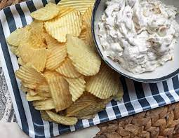

Onion Dip

Description
Almost everyone has had that onion soup powder mixed with sour cream dip or store boutght onion dip at some sort of party or social gathering.
Onion dip can be so much more though! I suggest trying to amke your own onion dip from scratch at least once.
I definitley think it is worth the effort.
Ingredients
- 4 large yellow onions, peeled
- 1/4 tsp. plus a pinch of baking soda
- 1 tbsp. salt
- 1 tbsp. brown sugar
- 1/4 olive oil
- splash of sherry vinegar, for deglazing
- 1 1/2 c. sour cream
- 3/4 c. mayonnaise
- 1/4 tsp. garlic powder
- 1/4 tsp. ground pepper (preferably white pepper)
Steps
- Thinly slice the onions and place in a large pot.
Sprinkle with the baking soda, salt, and dark brown sugar, and gently toss with tongs.
Cover the pot and let the onions rest for 10 minutes.
- After 10 minutes, uncover the pot, and place over high heat.
Drizzle in the olive oil and cook, stirring often, until the onions are reduced by 75 percent and are a light gold color.
Reduce heat to medium and continue cooking for approximately 15 minutes, stirring often.
- Deglaze the pan with a few shakes of sherry vinegar and water.
Reduce heat to low and continue stirring, scraping all the brown bits off the bottom of the pot.
The onions should be dark golden brown and reduced to about 1 1/2 cups in volume.
Remove from heat and let cool.
- Once cool, put 1/2 cup of the caramelized onions in a medium mixing bowl.
Add the sour cream, mayonnaise, garlic powder, and white pepper, and stir to combine.
- Cover tightly with plastic wrap and refrigerate for at least 1 hour before serving. Overnight would be even better.